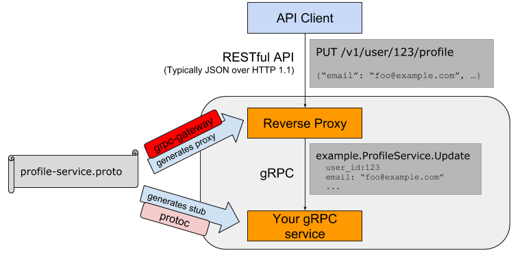

4.6 gRPC和Protobuf扩展
目前开源社区已经围绕Protobuf和gRPC开发出众多扩展，形成了庞大的生态。本节我们将简单介绍验证器和REST接口扩展。
4.6.1 验证器
到目前为止，我们接触的全部是第三版的Protobuf语法。第二版的Protobuf有个默认值特性，可以为字符串或数值类型的成员定义默认值。
我们采用第二版的Protobuf语法创建文件：
syntax = "proto2";
package main;
message Message {
optional string name = 1 [default = "gopher"];
optional int32 age = 2 [default = 10];
}
内置的默认值语法其实是通过Protobuf的扩展选项特性实现。在第三版的Protobuf中不再支持默认值特性，但是我们可以通过扩展选项自己模拟默认值特性。
下面是用proto3语法的扩展特性重新改写上述的proto文件：
syntax = "proto3";
package main;
import "google/protobuf/descriptor.proto";
extend google.protobuf.FieldOptions {
string default_string = 50000;
int32 default_int = 50001;
}
message Message {
string name = 1 [(default_string) = "gopher"];
int32 age = 2[(default_int) = 10];
}
其中成员后面的方括号内部的就是扩展语法。重新生成Go语言代码，里面会包含扩展选项相关的元信息：
var E_DefaultString = &proto.ExtensionDesc{
ExtendedType: (*descriptor.FieldOptions)(nil),
ExtensionType: (*string)(nil),
Field: 50000,
Name: "main.default_string",
Tag: "bytes,50000,opt,name=default_string,json=defaultString",
Filename: "helloworld.proto",
}
var E_DefaultInt = &proto.ExtensionDesc{
ExtendedType: (*descriptor.FieldOptions)(nil),
ExtensionType: (*int32)(nil),
Field: 50001,
Name: "main.default_int",
Tag: "varint,50001,opt,name=default_int,json=defaultInt",
Filename: "helloworld.proto",
}
我们可以在运行时通过类似反射的技术解析出Message每个成员定义的扩展选项，然后从每个扩展的相关联的信息中解析出我们定义的默认值。
在开源社区中，github.com/mwitkow/go-proto-validators 已经基于Protobuf的扩展特性实现了功能较为强大的验证器功能。要使用该验证器首先需要下载其提供的代码生成插件：
$ go get github.com/mwitkow/go-proto-validators/protoc-gen-govalidators
然后基于go-proto-validators验证器的规则为Message成员增加验证规则：
syntax = "proto3";
package main;
import "github.com/mwitkow/go-proto-validators/validator.proto";
message Message {
string important_string = 1 [
(validator.field) = {regex: "^[a-z]{2,5}$"}
];
int32 age = 2 [
(validator.field) = {int_gt: 0, int_lt: 100}
];
}
在方括弧表示的成员扩展中，validator.field表示扩展是validator包中定义的名为field扩展选项。validator.field的类型是FieldValidator结构体，在导入的validator.proto文件中定义。
所有的验证规则都由validator.proto文件中的FieldValidator定义：
syntax = "proto2";
package validator;
import "google/protobuf/descriptor.proto";
extend google.protobuf.FieldOptions {
optional FieldValidator field = 65020;
}
message FieldValidator {
// Uses a Golang RE2-syntax regex to match the field contents.
optional string regex = 1;
// Field value of integer strictly greater than this value.
optional int64 int_gt = 2;
// Field value of integer strictly smaller than this value.
optional int64 int_lt = 3;
// ... more ...
}
从FieldValidator定义的注释中我们可以看到验证器扩展的一些语法：其中regex表示用于字符串验证的正则表达式，int_gt和int_lt表示数值的范围。
然后采用以下的命令生成验证函数代码：
protoc \
--proto_path=${GOPATH}/src \
--proto_path=${GOPATH}/src/github.com/google/protobuf/src \
--proto_path=. \
--govalidators_out=. --go_out=plugins=grpc:.\
hello.proto
windows:替换
${GOPATH}为%GOPATH%即可.
以上的命令会调用protoc-gen-govalidators程序，生成一个独立的名为hello.validator.pb.go的文件：
var _regex_Message_ImportantString = regexp.MustCompile("^[a-z]{2,5}$")
func (this *Message) Validate() error {
if !_regex_Message_ImportantString.MatchString(this.ImportantString) {
return go_proto_validators.FieldError("ImportantString", fmt.Errorf(
`value '%v' must be a string conforming to regex "^[a-z]{2,5}$"`,
this.ImportantString,
))
}
if !(this.Age > 0) {
return go_proto_validators.FieldError("Age", fmt.Errorf(
`value '%v' must be greater than '0'`, this.Age,
))
}
if !(this.Age < 100) {
return go_proto_validators.FieldError("Age", fmt.Errorf(
`value '%v' must be less than '100'`, this.Age,
))
}
return nil
}
生成的代码为Message结构体增加了一个Validate方法，用于验证该成员是否满足Protobuf中定义的条件约束。无论采用何种类型，所有的Validate方法都用相同的签名，因此可以满足相同的验证接口。
通过生成的验证函数，并结合gRPC的截取器，我们可以很容易为每个方法的输入参数和返回值进行验证。
4.6.2 REST接口
gRPC服务一般用于集群内部通信，如果需要对外暴露服务一般会提供等价的REST接口。通过REST接口比较方便前端JavaScript和后端交互。开源社区中的grpc-gateway项目就实现了将gRPC服务转为REST服务的能力。
grpc-gateway的工作原理如下图：

图 4-2 gRPC-Gateway工作流程
通过在Protobuf文件中添加路由相关的元信息，通过自定义的代码插件生成路由相关的处理代码，最终将REST请求转给更后端的gRPC服务处理。
路由扩展元信息也是通过Protobuf的元数据扩展用法提供：
syntax = "proto3";
package main;
import "google/api/annotations.proto";
message StringMessage {
string value = 1;
}
service RestService {
rpc Get(StringMessage) returns (StringMessage) {
option (google.api.http) = {
get: "/get/{value}"
};
}
rpc Post(StringMessage) returns (StringMessage) {
option (google.api.http) = {
post: "/post"
body: "*"
};
}
}
我们首先为gRPC定义了Get和Post方法，然后通过元扩展语法在对应的方法后添加路由信息。其中“/get/{value}”路径对应的是Get方法，{value}部分对应参数中的value成员，结果通过json格式返回。Post方法对应“/post”路径，body中包含json格式的请求信息。
然后通过以下命令安装protoc-gen-grpc-gateway插件：
go get -u github.com/grpc-ecosystem/grpc-gateway/protoc-gen-grpc-gateway
再通过插件生成grpc-gateway必须的路由处理代码：
$ protoc -I/usr/local/include -I. \
-I$GOPATH/src \
-I$GOPATH/src/github.com/grpc-ecosystem/grpc-gateway/third_party/googleapis \
--grpc-gateway_out=. --go_out=plugins=grpc:.\
hello.proto
windows:替换
${GOPATH}为%GOPATH%即可.
插件会为RestService服务生成对应的RegisterRestServiceHandlerFromEndpoint函数：
func RegisterRestServiceHandlerFromEndpoint(
ctx context.Context, mux *runtime.ServeMux, endpoint string,
opts []grpc.DialOption,
) (err error) {
...
}
RegisterRestServiceHandlerFromEndpoint函数用于将定义了Rest接口的请求转发到真正的gRPC服务。注册路由处理函数之后就可以启动Web服务了：
func main() {
ctx := context.Background()
ctx, cancel := context.WithCancel(ctx)
defer cancel()
mux := runtime.NewServeMux()
err := RegisterRestServiceHandlerFromEndpoint(
ctx, mux, "localhost:5000",
[]grpc.DialOption{grpc.WithInsecure()},
)
if err != nil {
log.Fatal(err)
}
http.ListenAndServe(":8080", mux)
}
启动grpc服务 ,端口5000
type RestServiceImpl struct{}
func (r *RestServiceImpl) Get(ctx context.Context, message *StringMessage) (*StringMessage, error) {
return &StringMessage{Value: "Get hi:" + message.Value + "#"}, nil
}
func (r *RestServiceImpl) Post(ctx context.Context, message *StringMessage) (*StringMessage, error) {
return &StringMessage{Value: "Post hi:" + message.Value + "@"}, nil
}
func main() {
grpcServer := grpc.NewServer()
RegisterRestServiceServer(grpcServer, new(RestServiceImpl))
lis, _ := net.Listen("tcp", ":5000")
grpcServer.Serve(lis)
}
首先通过runtime.NewServeMux()函数创建路由处理器，然后通过RegisterRestServiceHandlerFromEndpoint函数将RestService服务相关的REST接口中转到后面的gRPC服务。grpc-gateway提供的runtime.ServeMux类也实现了http.Handler接口，因此可以和标准库中的相关函数配合使用。
当gRPC和REST服务全部启动之后，就可以用curl请求REST服务了：
$ curl localhost:8080/get/gopher
{"value":"Get: gopher"}
$ curl localhost:8080/post -X POST --data '{"value":"grpc"}'
{"value":"Post: grpc"}
在对外公布REST接口时，我们一般还会提供一个Swagger格式的文件用于描述这个接口规范。
$ go get -u github.com/grpc-ecosystem/grpc-gateway/protoc-gen-swagger
$ protoc -I. \
-I$GOPATH/src/github.com/grpc-ecosystem/grpc-gateway/third_party/googleapis \
--swagger_out=. \
hello.proto
然后会生成一个hello.swagger.json文件。这样的话就可以通过swagger-ui这个项目，在网页中提供REST接口的文档和测试等功能。
4.6.3 Nginx
最新的Nginx对gRPC提供了深度支持。可以通过Nginx将后端多个gRPC服务聚合到一个Nginx服务。同时Nginx也提供了为同一种gRPC服务注册多个后端的功能，这样可以轻松实现gRPC负载均衡的支持。Nginx的gRPC扩展是一个较大的主题，感兴趣的读者可以自行参考相关文档。